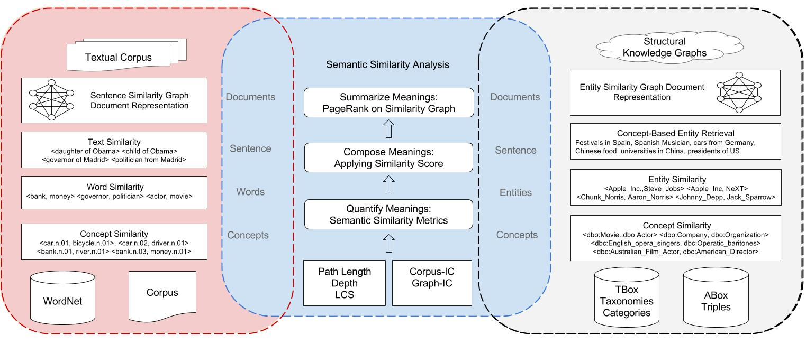
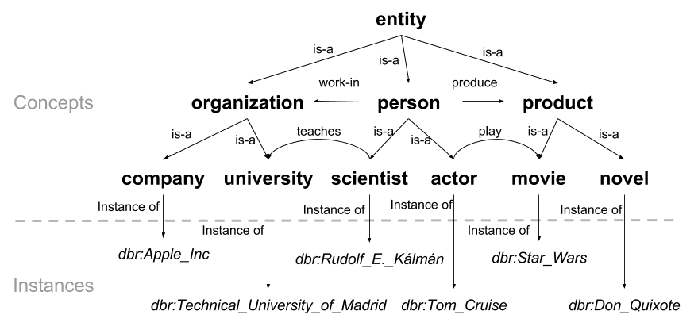

Introduction
Sematch is an integrated framework for the development, evaluation, and application of semantic similarity for Knowledge Graphs (KGs). It is easy to use Sematch to compute semantic similarity scores of concepts, words and entities. Sematch focuses on specific knowledge-based semantic similarity metrics that rely on structural knowledge in taxonomy (e.g. depth, path length, least common subsumer), and statistical information contents (corpus-IC and graph-IC). Knowledge-based approaches are different from their conterpart corpus-based approaches, which are mainly based on word coocurrence (e.g. Pointwise Mutual Information) or distributional semantics (Latent Semantic Analysis, Word2Vec, GLOVE and etc). Knowledge-based approaches are usually used for structual KGs, while corpus-based approaches are normally applied in textual corpora.
In text analysis applications, a common pipeline is adolpted in using semantic similarity from concept level, to word and sentence level. For example, word similarity is first computed based on similarity scores of WordNet concepts, and sentence similarity is computed by composing word similarity scores. Finally, document similarity could be computed by identifying important sentences, e.g. TextRank.

KG based applications also meet similar pipeline in using semantic similarity, from concept similarity (e.g. http://dbpedia.org/class/yago/Actor109765278) to entity similarity (e.g. http://dbpedia.org/resource/Madrid). Furthermore, in computing document similarity, entities are extracted and document similarity is computed by composing entity similarity scores.

In KGs, concepts usually denote ontology classes while entities refer to ontology instances. Moreover, those concepts are usually constructed into hierarchical taxonomies, such as DBpedia ontology class, thus quantifying concept similarity in KG relies on similar semantic information (e.g. path length, depth, least common subsumer, information content) and semantic similarity metrics (e.g. Path, Wu & Palmer,Li, Resnik, Lin, Jiang & Conrad and WPath). In consequence, Sematch provides an integrated framework to develop and evaluate semantic similarity metrics for concepts, words, entities and their applications.
Getting started: 20 minutes to Sematch
Install Sematch
pip install sematch
python -m sematch.download
We also provide a Sematch-Demo Server. You can use it for experimenting with main functionalities or take it as an example for using Sematch to develop applications.
Computing Word Similarity.
The core module of Sematch is measuring semantic similarity between concepts that are represented as concept taxonomies. Word similarity is computed based on the maximum semantic similarity of WordNet concepts. You can use Sematch to compute multilingual word similarity based on WordNet with various of semantic similarity metrics.
from sematch.semantic.similarity import WordNetSimilarity
wns = WordNetSimilarity()
# Computing English word similarity using Li method
wns.word_similarity('dog', 'cat', 'li') # 0.449327301063
# Computing Spanish word similarity using Lin method
wns.monol_word_similarity('perro', 'gato', 'spa', 'lin') #0.876800984373
# Computing Chinese word similarity using Wu & Palmer method
wns.monol_word_similarity('狗', '猫', 'cmn', 'wup') # 0.857142857143
# Computing Spanish and English word similarity using Resnik method
wns.crossl_word_similarity('perro', 'cat', 'spa', 'eng', 'res') #7.91166650904
# Computing Spanish and Chinese word similarity using Jiang & Conrad method
wns.crossl_word_similarity('perro', '猫', 'spa', 'cmn', 'jcn') #0.31023804699
# Computing Chinese and English word similarity using WPath method
wns.crossl_word_similarity('狗', 'cat', 'cmn', 'eng', 'wpath')#0.593666388463
Computing semantic similarity of YAGO concepts.
from sematch.semantic.similarity import YagoTypeSimilarity
sim = YagoTypeSimilarity()
#Measuring YAGO concept similarity through WordNet taxonomy and corpus based information content
sim.yago_similarity('http://dbpedia.org/class/yago/Dancer109989502','http://dbpedia.org/class/yago/Actor109765278', 'wpath') #0.642
sim.yago_similarity('http://dbpedia.org/class/yago/Dancer109989502','http://dbpedia.org/class/yago/Singer110599806', 'wpath') #0.544
#Measuring YAGO concept similarity based on graph-based IC
sim.yago_similarity('http://dbpedia.org/class/yago/Dancer109989502','http://dbpedia.org/class/yago/Actor109765278', 'wpath_graph') #0.423
sim.yago_similarity('http://dbpedia.org/class/yago/Dancer109989502','http://dbpedia.org/class/yago/Singer110599806', 'wpath_graph') #0.328
Computing semantic similarity of DBpedia concepts.
from sematch.semantic.graph import DBpediaDataTransform, Taxonomy
from sematch.semantic.similarity import ConceptSimilarity
concept = ConceptSimilarity(Taxonomy(DBpediaDataTransform()),'models/dbpedia_type_ic.txt')
concept.name2concept('actor')
concept.similarity('http://dbpedia.org/ontology/Actor','http://dbpedia.org/ontology/Film', 'path')
concept.similarity('http://dbpedia.org/ontology/Actor','http://dbpedia.org/ontology/Film', 'wup')
concept.similarity('http://dbpedia.org/ontology/Actor','http://dbpedia.org/ontology/Film', 'li')
concept.similarity('http://dbpedia.org/ontology/Actor','http://dbpedia.org/ontology/Film', 'res')
concept.similarity('http://dbpedia.org/ontology/Actor','http://dbpedia.org/ontology/Film', 'lin')
concept.similarity('http://dbpedia.org/ontology/Actor','http://dbpedia.org/ontology/Film', 'jcn')
concept.similarity('http://dbpedia.org/ontology/Actor','http://dbpedia.org/ontology/Film', 'wpath')
Computing semantic similarity of DBpedia entities.
from sematch.semantic.similarity import EntitySimilarity
sim = EntitySimilarity()
sim.similarity('http://dbpedia.org/resource/Madrid','http://dbpedia.org/resource/Barcelona') #0.409923677282
sim.similarity('http://dbpedia.org/resource/Apple_Inc.','http://dbpedia.org/resource/Steve_Jobs')#0.0904545454545
sim.relatedness('http://dbpedia.org/resource/Madrid','http://dbpedia.org/resource/Barcelona')#0.457984139871
sim.relatedness('http://dbpedia.org/resource/Apple_Inc.','http://dbpedia.org/resource/Steve_Jobs')#0.465991132787
Evaluate semantic similarity metrics with word similarity datasets.
from sematch.evaluation import WordSimEvaluation
from sematch.semantic.similarity import WordNetSimilarity
evaluation = WordSimEvaluation()
evaluation.dataset_names()
wns = WordNetSimilarity()
# define similarity metrics
wpath = lambda x, y: wns.word_similarity_wpath(x, y, 0.8)
# evaluate similarity metrics with SimLex dataset
evaluation.evaluate_metric('wpath', wpath, 'noun_simlex')
# performa Steiger's Z significance Test
evaluation.statistical_test('wpath', 'path', 'noun_simlex')
# define similarity metrics for Spanish words
wpath_es = lambda x, y: wns.monol_word_similarity(x, y, 'spa', 'path')
# define cross-lingual similarity metrics for English-Spanish
wpath_en_es = lambda x, y: wns.crossl_word_similarity(x, y, 'eng', 'spa', 'wpath')
# evaluate metrics in multilingual word similarity datasets
evaluation.evaluate_metric('wpath_es', wpath_es, 'rg65_spanish')
evaluation.evaluate_metric('wpath_en_es', wpath_en_es, 'rg65_EN-ES')
Evaluate semantic similarity metrics with category classification.
Although the word similarity correlation measure is the standard way to evaluate the semantic similarity metrics, it relies on human judgements over word pairs which may not have same performance in real applications. Therefore, apart from word similarity evaluation, the Sematch evaluation framework also includes a simple aspect category classification. The task classifies noun concepts such as pasta, noodle, steak, tea into their ontological parent concept FOOD, DRINKS.
from sematch.evaluation import AspectEvaluation
from sematch.application import SimClassifier, SimSVMClassifier
from sematch.semantic.similarity import WordNetSimilarity
# create aspect classification evaluation
evaluation = AspectEvaluation()
# load the dataset
X, y = evaluation.load_dataset()
# define word similarity function
wns = WordNetSimilarity()
word_sim = lambda x, y: wns.word_similarity(x, y)
# Train and evaluate metrics with unsupervised classification model
simclassifier = SimClassifier.train(zip(X,y), word_sim)
evaluation.evaluate(X,y, simclassifier)
macro averge: (0.65319812882333839, 0.7101245049198579, 0.66317566364913016, None)
micro average: (0.79210167952791644, 0.79210167952791644, 0.79210167952791644, None)
weighted average: (0.80842645056024054, 0.79210167952791644, 0.79639496616636352, None)
accuracy: 0.792101679528
precision recall f1-score support
SERVICE 0.50 0.43 0.46 519
RESTAURANT 0.81 0.66 0.73 228
FOOD 0.95 0.87 0.91 2256
LOCATION 0.26 0.67 0.37 54
AMBIENCE 0.60 0.70 0.65 597
DRINKS 0.81 0.93 0.87 752
avg / total 0.81 0.79 0.80 4406
You can use Sematch to download a list of entities having a specific type using different languages. Sematch will generate SPARQL queries and execute them in DBpedia Sparql Endpoint.
from sematch.application import Matcher
matcher = Matcher()
# matching scientist entities from DBpedia
matcher.match_type('scientist')
matcher.match_type('científico', 'spa')
matcher.match_type('科学家', 'cmn')
----SPARQL queries----
SELECT DISTINCT ?s, ?label, ?abstract WHERE {
{
?s <http://www.w3.org/1999/02/22-rdf-syntax-ns#type> <http://dbpedia.org/class/yago/NuclearPhysicist110364643> . }
UNION {
?s <http://www.w3.org/1999/02/22-rdf-syntax-ns#type> <http://dbpedia.org/class/yago/Econometrician110043491> . }
UNION {
?s <http://www.w3.org/1999/02/22-rdf-syntax-ns#type> <http://dbpedia.org/class/yago/Sociologist110620758> . }
UNION {
?s <http://www.w3.org/1999/02/22-rdf-syntax-ns#type> <http://dbpedia.org/class/yago/Archeologist109804806> . }
UNION {
?s <http://www.w3.org/1999/02/22-rdf-syntax-ns#type> <http://dbpedia.org/class/yago/Neurolinguist110354053> . }
?s <http://www.w3.org/1999/02/22-rdf-syntax-ns#type> <http://www.w3.org/2002/07/owl#Thing> .
?s <http://www.w3.org/2000/01/rdf-schema#label> ?label .
FILTER( lang(?label) = "en") .
?s <http://dbpedia.org/ontology/abstract> ?abstract .
FILTER( lang(?abstract) = "en") .
} LIMIT 5000
Matching Entities with type using SPARQL queries.
You can use Sematch to download a list of entities having a specific type using different languages. Sematch will generate SPARQL queries and execute them in DBpedia Sparql Endpoint.
from sematch.application import Matcher
matcher = Matcher()
# matching scientist entities from DBpedia
matcher.match_type('scientist')
matcher.match_type('científico', 'spa')
matcher.match_type('科学家', 'cmn')
matcher.match_entity_type('movies with Tom Cruise')
Example of automatically generated SPARQL query.
SELECT DISTINCT ?s, ?label, ?abstract WHERE {
{
?s <http://www.w3.org/1999/02/22-rdf-syntax-ns#type> <http://dbpedia.org/class/yago/NuclearPhysicist110364643> . }
UNION {
?s <http://www.w3.org/1999/02/22-rdf-syntax-ns#type> <http://dbpedia.org/class/yago/Econometrician110043491> . }
UNION {
?s <http://www.w3.org/1999/02/22-rdf-syntax-ns#type> <http://dbpedia.org/class/yago/Sociologist110620758> . }
UNION {
?s <http://www.w3.org/1999/02/22-rdf-syntax-ns#type> <http://dbpedia.org/class/yago/Archeologist109804806> . }
UNION {
?s <http://www.w3.org/1999/02/22-rdf-syntax-ns#type> <http://dbpedia.org/class/yago/Neurolinguist110354053> . }
?s <http://www.w3.org/1999/02/22-rdf-syntax-ns#type> <http://www.w3.org/2002/07/owl#Thing> .
?s <http://www.w3.org/2000/01/rdf-schema#label> ?label .
FILTER( lang(?label) = "en") .
?s <http://dbpedia.org/ontology/abstract> ?abstract .
FILTER( lang(?abstract) = "en") .
} LIMIT 5000
Entity feature extraction with Similarity Graph
Apart from semantic matching of entities from DBpedia, you can also use Sematch to extract features of entities and apply semantic similarity analysis using graph-based ranking algorithms. Given a list of objects (concepts, words, entities), Sematch compute their pairwise semantic similarity and generate similarity graph where nodes denote objects and edges denote similarity scores. An example of using similarity graph for extracting important words from an entity description.
from sematch.semantic.graph import SimGraph
from sematch.semantic.similarity import WordNetSimilarity
from sematch.nlp import Extraction, word_process
from sematch.semantic.sparql import EntityFeatures
from collections import Counter
tom = EntityFeatures().features('http://dbpedia.org/resource/Tom_Cruise')
words = Extraction().extract_nouns(tom['abstract'])
words = word_process(words)
wns = WordNetSimilarity()
word_graph = SimGraph(words, wns.word_similarity)
word_scores = word_graph.page_rank()
words, scores =zip(*Counter(word_scores).most_common(10))
print words
(u'picture', u'action', u'number', u'film', u'post', u'sport',
u'program', u'men', u'performance', u'motion')
Publications
- Ganggao Zhu and Carlos A. Iglesias Computing Semantic Similarity of Concepts in Knowledge Graphs, TKDE, 2016.
- Oscar Araque, Ganggao Zhu, Manuel Garcia-Amado and Carlos A. Iglesias Mining the Opinionated Web: Classification and Detection of Aspect Contexts for Aspect Based Sentiment Analysis, ICDM sentire, 2016.
- Ganggao Zhu and Carlos A. Iglesias Sematch: Semantic Entity Search from Knowledge Graph ESWC SumPre 2015
Support
You can post bug reports and feature requests in Github issues. The project is mainly maintained by Ganggao Zhu. You can contact him via gzhu [at] dit.upm.es
Why this name, Sematch and Logo?
The name of Sematch is composed based on Spanish "se" and English "match". It is also the abbreviation of semantic matching because semantic similarity metrics help to determine semantic distance of concepts, words, entities, instead of exact matching.
The logo of Sematch is based on Chinese Yin and Yang which is written in I Ching. Somehow, it correlates to 0 and 1 in computer science.